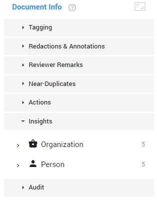
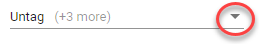

Reviewer Remarks
Remarks (max. 4000 characters by default) are saved when icon is shown.
Remarks are shown immediately in Properties widget (Remarks field).
For more information, see Reviewer Remarks.
Near-Duplicates
Find near-duplicates of the current document, by default sorted by the
percentage of similarity. You can also sort on one of the other columns.
-
View
a near-duplicate by selecting it.
-
Return to current document by selecting
Update For Current.
-
Open all near-duplicates in the Document List by selecting
Open in Document List.
There you can sort, navigate and add additional filters.
For more information, see Near-Duplicates.
Actions
Download the currently open document (native/original version or PDF).
Delete the currently open document (and its children).
For more information, see Actions.
Insights
View the entities that are detected per Entity Type.
- In the example below, 5 entities are detected for the Entity Types Organization and Person.

- To view all detected entities for the entity type Organization,
select Organization.
For a specific organization, select the arrow next to the Organization icon and select the organization you are looking for.
Detected entites will be highlighted in orange.
Only entities that are enabled in Entity Management are shown.
For more information, see Insights.
Audit
View Audit actions performed on a document in Document View (only when you have a role with the proper audit permission assigned to you).
-
In Document View, on the right side of the screen, select Audit.
- Each time an action is performed on the currently shown document, it is listed here (including User name, Date executed, Time executed).
- Filter on specific actions supported in Document View.

- Reload
 to refresh the list and view the latest actions.
to refresh the list and view the latest actions.
- Adjust the Page Size and/or browse through the result pages.
Productions
View if and how the currently open document (image) has been produced.
Note 1: View all produced documents of a production via Facet View (Browse). Make sure the Productions facet is selected.
Note 2: You can only view Productions if you have a role with the proper permission (Access produced document content) assigned to you.
-
Select Productions.
- Select a production of the currently open document (a selected production has a blue border).
View the production name, bates numbers, how the document has been produced (as an image, native and/or text file) and placeholders.
- Toggle between Image View (shows you the currently open document and all additions made during review)/Media View (audio/video files) and Produced View (shows you how the currently open document was actually produced for the selected production). Produced View allows you to check if redactions are in place, if the bates numbers are OK, if the quality of the produced image is OK, etc.